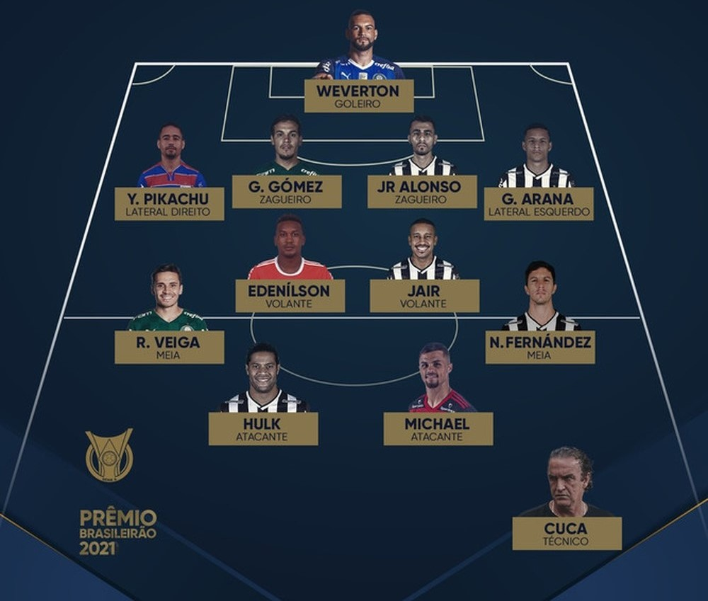

Voltar
|
Página Inicial
NÚMEROS DA TEMPORADA 2021
BRASILEIRÃO 2021
2º maior campanha da história (84 pontos)
3° maior artilheiro do clube em uma edição (Hulk, com 19 gols)
2º melhor campanha de mandante
2º maior campanha de mandante
2º maior campanha do clube no turno (42 pontos)
3º maior campanha de visitante
RECORDES ABSOLUTOS DO BRASILEIRO
16 vitórias seguidas como mandante
9 vitórias seguidas no torneio (ao lado do Inter - 9)
Recorde de público no futebol brasileiro em 2021 (61.573)
Maior público da história do Novo Mineirão (desde 2013)
RECORDES DENTRO DO CLUBE
Maior campanha nos pontos corridos (84 pontos/75% de aproveitamento)
Maior número de vitórias em Brasileiros (26)
Melhor defesa em Brasileiros (30 gols sofridos)
Melhor campanha de mandante da sua história (52 pontos/91%)
Maior pontuação fora de casa em pontos corridos (32 pontos/59,2%)
Maior número de rodadas seguidas na liderança (24)
Melhor returno do Brasileiro (42 pontos)
Melhor ataque (45)
PRÊMIO BOLA DE PRATA
Melhor jogador/Bola de ouro:
Hulk, participou de 35 partidas, marcou 19 gols e deu 7 assistências
Artilheiro:
Hulk, 19 gols
Revelação:
Zaracho, por meio de votação popular
Goleiro:
Éverson
Lateral-direito:
Mariano
Zagueiro:
Junior Alonso
Lateral-esquerdo:
Guilherme Arana
Volante:
Jair
Meio-campo:
Nacho Fernández
Atacante:
Hulk
Técnico:
Cuca
SELEÇÃO DO BRASILEIRÃO

COPA DO BRASIL
Maior goleada da história das finais da Copa do Brasil: 4x0 no primeiro jogo e 6x1 contra o Athletico-PR no placar agreado
Artilheiro
isolado
com 8 gols: Hulk
Maior número de assistências, sendo estas 4: Zaracho
Clube a fazer mais gols em todos os tempos da Copa do Brasil